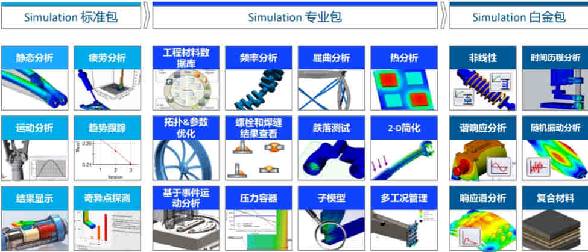

Simulation-概述
功能矩阵
有限元分析概述
在数学术语中，FEA （Finite Element Analysis）也称之为有限单元法，有限元法的基本概念将复杂的问题分解成很多简单的、便于求解的小问题，再将这些小问题所求得的解进行综合，得到一个整体的、接近于原始问题的解。
分析三阶段
- 前处理：前处理是建立有限元模型，完成单元网格划分；
- 求解：
- 后处理：采集处理分析结果，使用户能简便提取信息，了解计算结果

建立有限元模型–>求解有限元模型–>结果分析

分析的误差

有限单元
离散化过程（也叫网格划分）是将连续的模型剖分成有限单元。Solidworks Simulation 用实体四面体单元划分实体几何体，而用三角形壳单元划分几何面。
单元类型：在【生成网格】时，有选项是选择“草稿品质”或“高品质”的选项
- 一阶实体四面体单元
- 二阶实体四面体单元
- 一阶三角形壳单元
- 二阶三角形壳单元

自由度
决定一个物体的位置所需独立坐标的数目，叫做这个物体的自由度 。有限单元网格中的自由度定义了节点平移或转动的能力。节点拥有的自由度数取决于节点所属的单元类型。
实体单元节点：3个平移自由度
壳单元节点：6个自由度
梁单元节点：6个自由度
FEA计算
FEA结果解释
默认分析的结果图解。FEA在结构分析中提供了应力、应变和位移的解，在热分析中提供温度、温度梯度和热流的解。
- 位 移：物体变形后的形状
- 应 力：物体受力状况
- 应 变：物体变形程度
第一强度理论（最大法向应力理论）
P1：第一主应力
o 主应力：切应力为零的平面上的正应力。
一般适用于脆性材料，如铸铁、陶瓷、工具钢等
第二强度理论（最大伸长线应变理论）
P1-u(P2+P3)
合金铸铁、低温回火的高强度钢和石料等
第三强度理论（最大切应力理论）
最大抗剪应力Τ max=(P1-P3)/2
第四强度理论——形状改变比能理论
Von Mises应力
使用限制
线性材料
在所有SW材质中，应力和应变是成线性比例关系。大多数结构的盈利值低于屈服应力，而安全系数通常与屈服应力有关。
小变形
小变形发现是假设在变形过程中结构的刚度仍保持不变。大变形的刚度有变化导致影响结果。
静态载荷